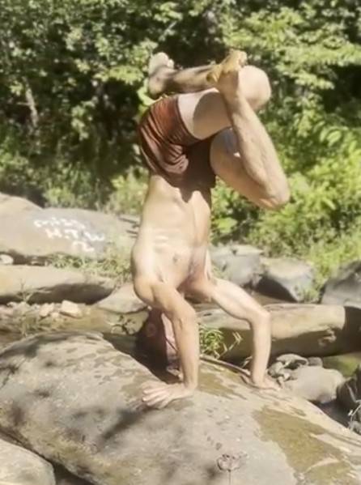
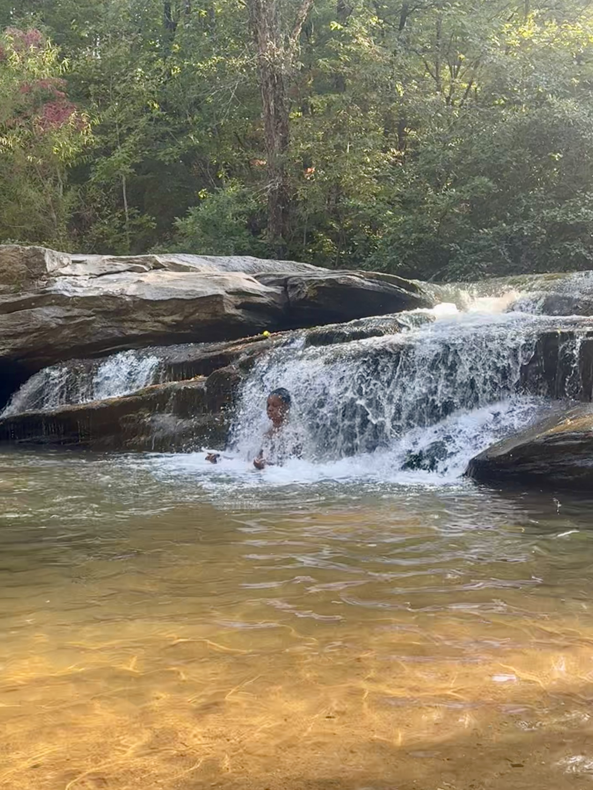
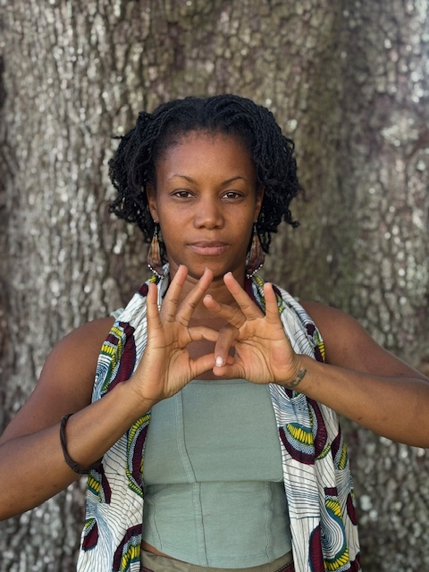

Get LIT — Living Inner Technologies
Three practices you carry with you for life. Each one asks nothing from the outside: no tools, no equipment, and once you learn them, no dependence on anyone else. Just your body, your attention, and skills that deepen the longer you tend to them.
Utilizing your own body's natural movement to restore and revitalize healthy function and self-expression.
Rooting into felt sense of wellness cultivated by gratitude that becomes available anywhere
Cultivating the skill of inner discernment to both release any energetic blockages and nourish deeper vitality.
Movement as Medicine

Awakening the self healing power of movement
From breath awareness, to fascial reprogramming, to e-centric strength stretching, to natural movement patterns. This practice requires no external tools or weights; just the ground, the walls, and your own body weight are enough to build a transformational practice for anyone in any environment, with quick and long-lasting results.
Meditation through Felt Sense

A very different kind of meditation.
Utilizing gratitude, breath, and a deep understanding of how the mind works, each session cultivates and nourishes an inner sense of wellness that's always accessible - becoming ever more accessible the more it's practiced. Over time, that sense stops being something you visit during meditation. It becomes something you can reach anywhere, at any moment of the day.
Muscle Testing as Inner Discernment

Energetic Hygeine and Attunement
We teach the art and skill of muscle testing. How to do it yourself, and the different ways it can support your wellness journey. The skill develops inner discernment and hightened intuition that stays with you, even when receiving guidance from others. This practice opens the door to energetic tending: working directly with the emotional and energetic patterns held in the body, being able to release old blockages and reveal a path forward towards more viatlity.
Who are we

Lev
Lev is a family man, vitality artist, natural movement trainer, transformational bodyworker, nourishment innovator, and co-creator of Journey Home Vitals. His path towards embodying wellness-based life was shaped early by childhood injuries, exposure to energetic healing, and formative experiences immersed in Nature, and growing and foraging his own food. From those early experiences Lev learned experientially as well as academically from diverse teachers and methods of healing such as massage therapy from Potomac Massage Training Institute, True Body Intelligence from Isaiah Fleissbach and Christopher Mayer, Indigenous African Healing from Traditional Healers of The Earth Center, Thai bodywork from Francisco Morales-Bermudez, and Capoeira Angola from Mestre Cobra Mansa, all of which inform his multifaceted healing practice. Professionally, Lev has worked in top-rated wellness spaces such as Zen and the City (Baltimore, MD), EarthFit Gym (Beaufort, SC), Synergy Yoga Retreats, and operated his own mobile massage and movement practice. He has helped hundreds of individuals recover from injuries, relieve chronic pain, and embody greater vitality through bodywork, energy healing, and natural movement. Fluent in five languages and continuously learning new ones, Lev is passionate about connecting with people of diverse cultures and walks of life, and the sacred relationships between the body, food, movement, healing, and nature, continuously learning from indigenous cultural wisdom to be able to experience a deeper sense of home on this Earth.

Ife
Ife has been on the path of seeking ways to support wellness from within out since she realized how deeply our stories affect our experience of reality, in learning about the placebo effect in her first college program over 20 years ago. This realization was seeded by her family's yearly practice of Kwanzaa and the reflection of the Nguzo Saba, or 7 principles, throughout her childhood. Her academic achievements include a master's degree in Transpersonal Psychology with emphases in Women's Spirituality and Creative Innovation from Sofia University, and a magna cum laude bachelor's in Media and Communication with emphases in Film and Sustainability from Maharishi International University. Through these studies and many self-directed others, she has discovered a life path of amplifying wellness that she celebrates in sharing.
To be well is to be home within yourself, your community, and by the land you walk upon.
Join us on the journey going, being, & always home.
JourneyHomeVitals@proton.me443.202.3843JourneyHomeVitals.com